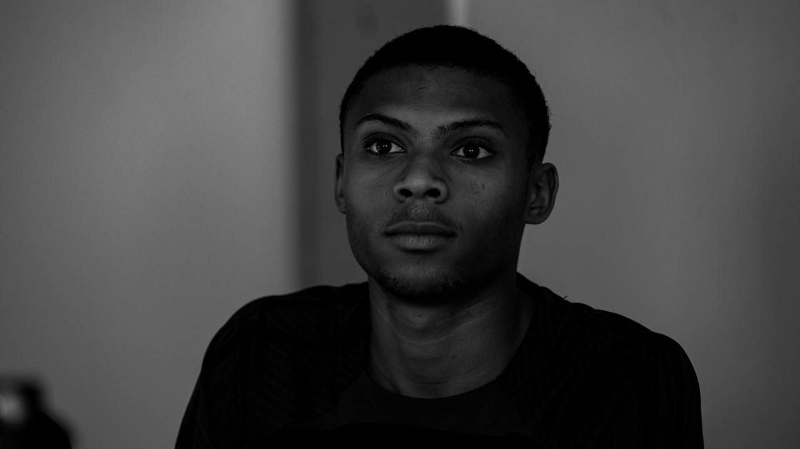

Olá Sou Alexander Cabral, Uma voz emergente do cinema cabo-verdiano. Estudo Tecnologia e Multimédia na Universidade de Cabo Verde e, desde 2021, tenho vindo a construir o meu caminho no audiovisual, onde a estética encontra a emoção e as histórias nascem da vivência cabo-verdiana.
O meu trabalho já foi reconhecido com o prémio “Jovem Agricultor”, no Oiá 1 Minute, e com a distinção “Boa Viagi”, na Semana Tim UNICV.
Aos 21 anos, caminho entre imagens e sentimentos, movido pelo sonho de levar o cinema africano além-fronteiras, através de um olhar íntimo, sensível e profundamente enraizado na realidade que me forma.
